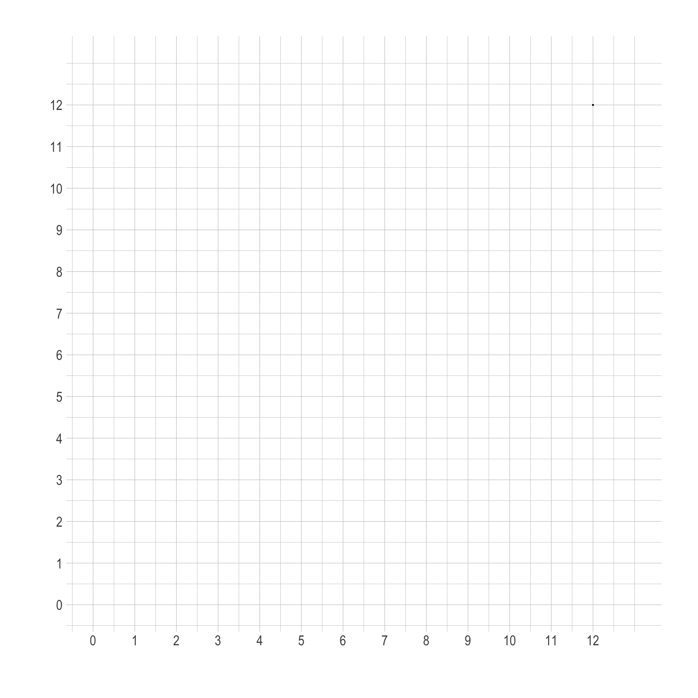

Fall 2023 ECON 340 Midterm Exam 1
Honor Pledges
I solemnly swear that I will not cheat or engage in any form of academic dishonesty during this exam.
I will not communicate with other students or use unauthorized materials.
I will uphold the integrity of this exam and demonstrate my own knowledge and abilities.
By taking this pledge, I acknowledge that academic dishonesty undermines the academic process and is a violation of the trust placed in me as a student.
I accept the consequences of any violation of this promise.
- Student’s Name:
- Student’s ID:
- Student’s Signature:
Question 1. Filling in Blanks, Short-answers, and Multiple Choices.
Q1a.
Who will win or share Nobel Prize in Economic Science this year?
Answer:
Q1b.
include tomatoes, VCRs and basketball shoes. include clean air, charitable deeds, and the view from a mountain top.
Q1c.
Proponents of a standard argue that people have a right to protection from unsolicited damage to their health.
Q1d.
Both sources and sinks make up : the inputs that nature provides for our production and consumption proccesses.
Q1e.
Government regulation of pollution is one way of externalities.
Q1f.
What is the definition of Pareto efficieny?
Answer:
Q1g.
What does Coase Theorem says?
Answer:
Q1h.
What are the definitions of the willingness to pay (WTP) and the willingness to accept (WTA) for environmental quality?
Answer:
Q1i.
A “tragedy of the commons” occurs for resources like the air that are commonly owned
- because users weigh the full social costs against private benefits.
- when there is free access to the resource.
- when there is effective regulation of resource use.
- when the population is small and stable.
- because users internalize the negative externality associated with the resource use.
Q1j.
Economists use survey approaches for measuring the benefits of environmental protections called . The four possible errors in these survey estimates are:
Question 2. Marginal Analysis
Suppose a factory produces goods under the private cost function \[ PC(Q) = \frac{1}{2}Q^{2} + Q \] where \(Q\) and \(PC(Q)\) are the quantity of output and the private total cost, respectively.
The factory is currently causing environmental pollution in the surrounding area. The external cost of this pollution is defined as:
\[ EC(Q) = 4Q \]
Let \(P\) be the price of the goods produced in the factory. The the demand curve for the goods is \[ D(P) = 20 − 2P. \]
Q2a.
Draw curves for (1) demand, (2) marginal private cost, and (3) marginal social cost.
Answer:
Q2b.
What is the size of the social damage caused by the producer’s activity?
Answer:
Q2c.
Let \(T\) denote the tax levied on each unit of the goods produced, and the regulatory authority decides to internalize social damage by this Pigouvian tax scheme.
- Solve the optimal value for \(T\).
- How much is the tax revenue?
Answer:
Question 3. A Public Good Game
A community lives near a forest. The forest provides wood, which the villagers can use for various purposes like heating, building, or selling. However, the forest also acts as a carbon sink, absorbing carbon dioxide and providing fresh air, and is home to various wildlife. If too many trees are cut down, the forest will degrade, leading to loss of these environmental benefits.
There are \(N\) number of people in the village. Each person is endowed with \(\$y\), and must decide how much of their endowment to invest in a communal fund for forest conservation and how much to keep for themselves. Let \(g_{i}\) denote each player’s contribution to the communal fund.
The total amount of dollars in the communial fund is multiplied by some constant factor \(R\), where \(1 < R < N\). The multiplied amount is then equally distributed among all players, irrespective of their individual contributions.
Each person \(i\)’s utility is as follows: \[ \begin{align} U_{i} &= y - g_{i} + \frac{R}{N} \times G\\ &= y - g_{i} + \frac{R}{N} \times \left(\, g_{i} + G_{-i} \,\right), \end{align} \] where \(G\) is the total amount of dollars collected for the communial fund, and \(G_{-i} = G - g_{i}\).
Q3a.
In equilibrium, how much would each individual contribute to the fund?
Answer:
Q3b.
Under the efficiency standard, what is the social welfare function?
Answer:
Q3c.
What is the socially optimal level of \(g_{i}\), for which the Social Planner chooses?
Answer: